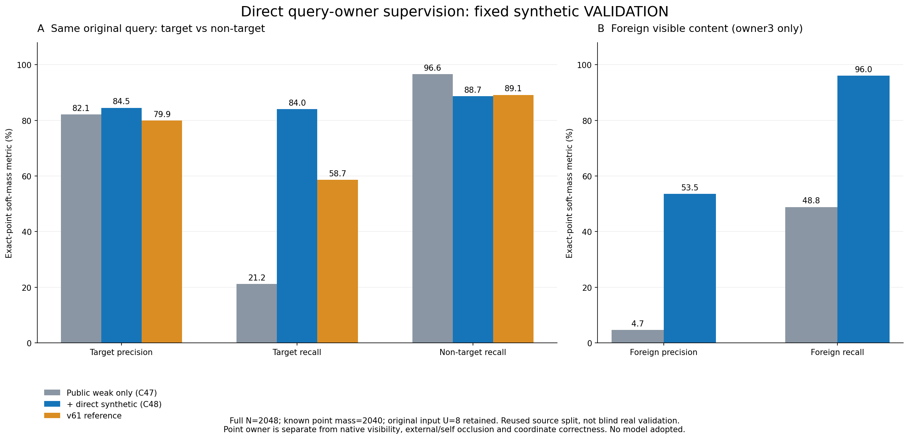

실제 학습은 두 arm 각각8000회, 총16000 updates를 완료했고 두 final checkpoint가 고정된 후 저장 출력을 만들었다. C47은 public assistant-weak253만, C48은 같은 public loss에 원 synthetic TRAIN available4016의 soft owner loss를 더했다. source 클래스 균형은 TRAIN mass로만 계산했다.
원 전체2048행, known point-owner mass2040, missing q8, predictionU8을 유지한다. 정답 mass T=864.87 / F=75.25 / BG=1099.88이며 이 표는 T 대 nonT의 binary 진단이다. v61은 기존 문턱0의 저장 reference를 출처와 함께 재사용했다.
| 고정 조건 | T precision | T recall | nonT recall | predictionU / 원행 |
|---|---|---|---|---|
| C47 · public weak253 | 82.08% | 21.16% | 96.60% | 8 / 2048 |
| C48 · weak253 + source4016 | 84.50% | 84.03% | 88.66% | 8 / 2048 |
| v61 · 기존 binary reference | 79.89% | 58.66% | 89.14% | 8 / 2048 |
C48의 nonT recall88.66%는 C47의96.60%보다7.94pp 낮고, v61의89.14%보다0.48pp 낮다. FOREIGN recall96.03%와 precision53.53%를 함께 보아야 하며 오탐은 남는다. 이 source VAL은 과거부터 반복 사용된 원 public synthetic split로, 새 blind 검증이나 실사 전이 증거가 아니다.

Root가 실제 PNG를 확인한 scientific plot. 새 owner head의 FOREIGN과 native external E는 별도이다.
행은 source truth T/F/BG, 열은 예측 T/F/BG/U다. 아래 숫자는 fractional soft mass이며 정수 정답 개수가 아니다. precision은 known truth mass에서 계산하고, recall 분모에는 predictionU의 known mass도 포함한다. ambiguity·INVALID·missing mass는 별도로 보존한다. 이번 전체 U88은 unknown mass88이며 known CM의 U열은0이다.
| 조건 | truth | 예측 T / F / BG / U mass | precision | recall | truth known mass |
|---|---|---|---|---|---|
| C47 · public weak253 | T | 183.03 / 438.18 / 243.66 / 0.00 | 82.08% | 21.16% | 864.87 |
| C47 · public weak253 | F | 7.00 / 36.75 / 31.50 / 0.00 | 4.69% | 48.84% | 75.25 |
| C47 · public weak253 | BG | 32.97 / 309.07 / 757.84 / 0.00 | 73.36% | 68.90% | 1099.88 |
| C48 · weak253 + source4016 | T | 726.73 / 49.30 / 88.84 / 0.00 | 84.50% | 84.03% | 864.87 |
| C48 · weak253 + source4016 | F | 2.01 / 72.27 / 0.98 / 0.00 | 53.53% | 96.03% | 75.25 |
| C48 · weak253 + source4016 | BG | 131.26 / 13.43 / 955.18 / 0.00 | 91.41% | 86.84% | 1099.88 |
ALL6144 = TRAIN4096 + VALIDATION2048. 전체 known mass6056, 원 inputU88, null q56, INVALID mass32를 별도로 유지했다. TRAIN은 학습에 노출된 apparent 결과다. MR public weak253의 final apparent CM은 양 arm 모두53/52/148 대각선이며 held owner 정답·성능은 만들지 않았다.
| 원 split | 조건 | 원행 | known mass | T precision | T recall | nonT recall | predU | missing q | INVALID mass |
|---|---|---|---|---|---|---|---|---|---|
| ALL | C47 · public weak253 | 6144 | 6,056.00 | 84.68% | 27.34% | 96.75% | 88 | 56 | 32.00 |
| ALL | C48 · weak253 + source4016 | 6144 | 6,056.00 | 89.26% | 91.21% | 92.79% | 88 | 56 | 32.00 |
| ALL | v61 · 기존 binary reference | 6144 | 6,056.00 | 81.54% | 60.56% | 91.00% | 88 | 56 | 32.00 |
| TRAIN · apparent | C47 · public weak253 | 4096 | 4,016.00 | 85.74% | 30.82% | 96.83% | 80 | 48 | 32.00 |
| TRAIN · apparent | C48 · weak253 + source4016 | 4096 | 4,016.00 | 91.83% | 95.25% | 94.75% | 80 | 48 | 32.00 |
| TRAIN · apparent | v61 · 기존 binary reference | 4096 | 4,016.00 | 82.46% | 61.63% | 91.88% | 80 | 48 | 32.00 |
| VALIDATION | C47 · public weak253 | 2048 | 2,040.00 | 82.08% | 21.16% | 96.60% | 8 | 8 | 0.00 |
| VALIDATION | C48 · weak253 + source4016 | 2048 | 2,040.00 | 84.50% | 84.03% | 88.66% | 8 | 8 | 0.00 |
| VALIDATION | v61 · 기존 binary reference | 2048 | 2,040.00 | 79.89% | 58.66% | 89.14% | 8 | 8 | 0.00 |
전체 공통 paired6056의 row mask가 원 V174 reference와 정확히 같다. 원행과 U를 삭제한 대체 headline으로 사용하지 않는다.
| 조건 | paired행 | known mass | T precision | T recall | nonT recall | predU |
|---|---|---|---|---|---|---|
| C47 · public weak253 | 2040 | 2,040.00 | 82.08% | 21.16% | 96.60% | 0 |
| C48 · weak253 + source4016 | 2040 | 2,040.00 | 84.50% | 84.03% | 88.66% | 0 |
| v61 · 기존 binary reference | 2040 | 2,040.00 | 79.89% | 58.66% | 89.14% | 0 |
원 native slot metadata로 층화한 동일한 literal point-owner 진단이다. native의 물리 identity나 가시성 성공을 인증하는 표가 아니다.
| 원 stratum | 조건 | 원행 | known mass | T precision | T recall | nonT recall | F precision | predU |
|---|---|---|---|---|---|---|---|---|
| native_slot::0 | C47 · public weak253 | 256 | 255.00 | 88.28% | 31.81% | 96.44% | 9.15% | 1 |
| native_slot::0 | C48 · weak253 + source4016 | 256 | 255.00 | 75.18% | 83.20% | 76.87% | 42.33% | 1 |
| native_slot::0 | v61 · 기존 binary reference | 256 | 255.00 | 73.46% | 66.17% | 79.87% | — | 1 |
| native_slot::1 | C47 · public weak253 | 256 | 255.00 | 72.72% | 13.83% | 93.48% | 9.18% | 1 |
| native_slot::1 | C48 · weak253 + source4016 | 256 | 255.00 | 85.93% | 82.92% | 82.95% | 58.34% | 1 |
| native_slot::1 | v61 · 기존 binary reference | 256 | 255.00 | 77.42% | 33.81% | 87.61% | — | 1 |
| native_slot::2 | C47 · public weak253 | 256 | 255.00 | — | 0.00% | 100.00% | 21.76% | 1 |
| native_slot::2 | C48 · weak253 + source4016 | 256 | 255.00 | 80.07% | 57.05% | 96.85% | 55.77% | 1 |
| native_slot::2 | v61 · 기존 binary reference | 256 | 255.00 | 0.00% | 0.00% | 99.04% | — | 1 |
| native_slot::3 | C47 · public weak253 | 256 | 255.00 | — | 0.00% | 100.00% | 12.46% | 1 |
| native_slot::3 | C48 · weak253 + source4016 | 256 | 255.00 | 80.53% | 72.47% | 96.41% | 43.69% | 1 |
| native_slot::3 | v61 · 기존 binary reference | 256 | 255.00 | — | 0.00% | 100.00% | — | 1 |
| native_slot::4 | C47 · public weak253 | 256 | 255.00 | 47.76% | 6.66% | 95.80% | 3.55% | 1 |
| native_slot::4 | C48 · weak253 + source4016 | 256 | 255.00 | 83.63% | 57.40% | 93.52% | 71.43% | 1 |
| native_slot::4 | v61 · 기존 binary reference | 256 | 255.00 | — | 0.00% | 100.00% | — | 1 |
| native_slot::5 | C47 · public weak253 | 256 | 255.00 | — | 0.00% | 100.00% | 5.50% | 1 |
| native_slot::5 | C48 · weak253 + source4016 | 256 | 255.00 | 61.42% | 63.54% | 92.65% | 66.59% | 1 |
| native_slot::5 | v61 · 기존 binary reference | 256 | 255.00 | 28.84% | 7.28% | 96.70% | — | 1 |
| native_slot::6 | C47 · public weak253 | 256 | 255.00 | 93.25% | 33.34% | 92.49% | 0.00% | 1 |
| native_slot::6 | C48 · weak253 + source4016 | 256 | 255.00 | 91.92% | 96.21% | 73.69% | — | 1 |
| native_slot::6 | v61 · 기존 binary reference | 256 | 255.00 | 83.78% | 97.68% | 41.15% | — | 1 |
| native_slot::7 | C47 · public weak253 | 256 | 255.00 | 77.46% | 29.23% | 74.72% | 0.66% | 1 |
| native_slot::7 | C48 · weak253 + source4016 | 256 | 255.00 | 88.28% | 99.48% | 60.75% | 50.00% | 1 |
| native_slot::7 | v61 · 기존 binary reference | 256 | 255.00 | 82.60% | 100.00% | 37.38% | — | 1 |
| material::DARK_POLYMER | C47 · public weak253 | 1024 | 1,024.00 | 0.00% | 0.00% | 99.70% | 4.37% | 0 |
| material::DARK_POLYMER | C48 · weak253 + source4016 | 1024 | 1,024.00 | 82.61% | 85.04% | 89.95% | 53.21% | 0 |
| material::DARK_POLYMER | v61 · 기존 binary reference | 1024 | 1,024.00 | 77.33% | 64.27% | 89.42% | — | 0 |
| material::PROCEDURAL_WOOD | C47 · public weak253 | 1024 | 1,016.00 | 82.82% | 36.85% | 92.69% | 5.62% | 8 |
| material::PROCEDURAL_WOOD | C48 · weak253 + source4016 | 1024 | 1,016.00 | 86.00% | 83.28% | 87.03% | 53.89% | 8 |
| material::PROCEDURAL_WOOD | v61 · 기존 binary reference | 1024 | 1,016.00 | 82.28% | 54.50% | 88.77% | — | 8 |
| aspect::RECTANGULAR | C47 · public weak253 | 1024 | 1,016.00 | 82.73% | 19.88% | 97.17% | 4.45% | 8 |
| aspect::RECTANGULAR | C48 · weak253 + source4016 | 1024 | 1,016.00 | 81.63% | 80.25% | 87.68% | 44.80% | 8 |
| aspect::RECTANGULAR | v61 · 기존 binary reference | 1024 | 1,016.00 | 79.88% | 62.83% | 89.21% | — | 8 |
| aspect::SQUARE | C47 · public weak253 | 1024 | 1,024.00 | 81.56% | 22.33% | 96.00% | 4.94% | 0 |
| aspect::SQUARE | C48 · weak253 + source4016 | 1024 | 1,024.00 | 87.06% | 87.46% | 89.69% | 67.47% | 0 |
| aspect::SQUARE | v61 · 기존 binary reference | 1024 | 1,024.00 | 79.91% | 54.87% | 89.06% | — | 0 |
FULL/paired 각각63 strata, 총630개 owner/binary metric 원본 JSON · 전체6144행 ledger
고정32 source crop gallery · 최종 caption v2 · 실제 view QA
B는 v1/v2 각각4 contact image에 있는 고정32 사례를 실제 view_image로 확인했다. v2는 caption prefix만 줄였고 원 crop·숫자·선택·예측은 그대로다. 점F mass1인#4104와 점T mass1인#4618에서 C48의 해당 owner 출력이 보이지만, 점T mass1인#4112는 C48 F, 점BG mass1인#4129는 C48 T로 남는다. 고정 그림 관찰은 전체6144 crop 전수 관찰이나 일반화 성능 검증을 뜻하지 않는다. HTML은 source/local links를 확인했고 browser render를 주장하지 않는다.
이 matched pair는 synthetic source의 query-content 구성요소에 직접 감독을 더한 효과를 보여준다. T는 어떤 target part든 포함하고 F는 현재 q의 foreign 소속이다. 물리 native identity·좌표 정확도·native 외부/자기가림·quality·entity 적합성은 별도이며 기존 모델·라벨·qualification을 바꾸지 않았다. WOOD/SQUARE와 native8 전체 과제는 유지되고 실사 성공·모델 채택·전체 완료를 선언하지 않는다.
Root 독립 감사는 새 raw prediction12288개, ALL/TRAIN/VAL 양head의 owner/binary12개 metric, 실제16000개 update/draw/loss mixture를 검산했다. per-stratum630개 metric과 checkpoint tensor를 별도로 재계산한 감사는 아니다. evaluator는 고정 pure metric과 exact metadata/6056 mask를 사용한다.
실제 fit COMPLETE · fit terminal · saved 평가 COMPLETE · 평가 terminal · Root 실제 수치/학습로그 검산 · 독립 trainer 정적 검토 · Root plot/crop 실제 시각 QA · ROOT_RESULTS_KO.json · ROOT_PHASE_RESULT.json
selected_model=null · adopted=false · fully_solved=false · goal_status=active_unsolved. 다음 조건의 사전 설계는 이번 결과로 변경하지 않는다.